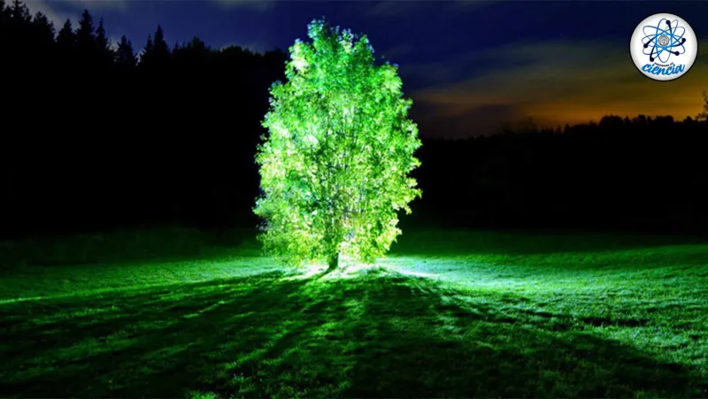

Científicos de la Universidad de Quito han anunciado el descubrimiento de una nueva especie de árbol en una zona remota de la Amazonía ecuatoriana. Lo sorprendente de este hallazgo es que el árbol, bautizado como Luminaria nocturna, emite una tenue luz verde durante la noche gracias a un proceso bioluminiscente natural aún en estudio. Los investigadores creen que esta característica podría tener aplicaciones en iluminación sostenible y bioingeniería. El hallazgo ha generado gran interés en la comunidad científica internacional.
Un equipo de investigadores del Instituto Tecnológico de Massachusetts (MIT) ha desarrollado una nueva generación de paneles solares orgánicos que prometen ser más eficientes y económicos que los tradicionales. Estos paneles están hechos de materiales orgánicos que son flexibles y ligeros, lo que permite su instalación en una variedad de superficies, incluyendo ropa y dispositivos portátiles. Los primeros prototipos han demostrado una eficiencia de conversión energética del 15%, y los científicos esperan mejorar esta cifra en los próximos años. Esta innovación podría revolucionar el mercado de la energía solar y contribuir significativamente a la reducción de la dependencia de combustibles fósiles.
Arqueólogos trabajando en el desierto de Sahara han descubierto los restos de una antigua ciudad que se cree que data de hace más de 3,000 años. Utilizando tecnología de escaneo por satélite y drones, el equipo ha identificado estructuras que incluyen templos, viviendas y sistemas de irrigación. Los artefactos encontrados sugieren que esta ciudad fue un importante centro comercial y cultural en su época. Los investigadores están emocionados por las posibilidades que este descubrimiento ofrece para comprender mejor las civilizaciones antiguas que habitaron la región y su impacto en la historia humana.